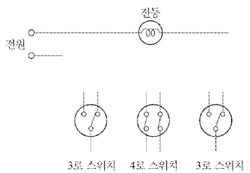
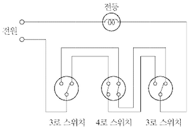
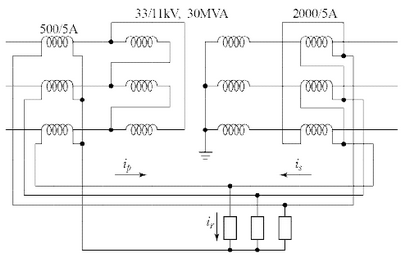
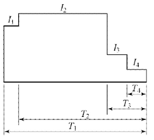
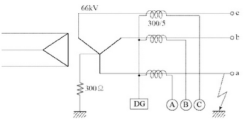
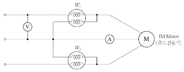
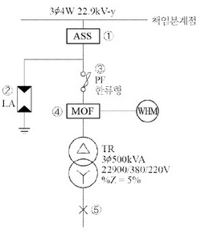
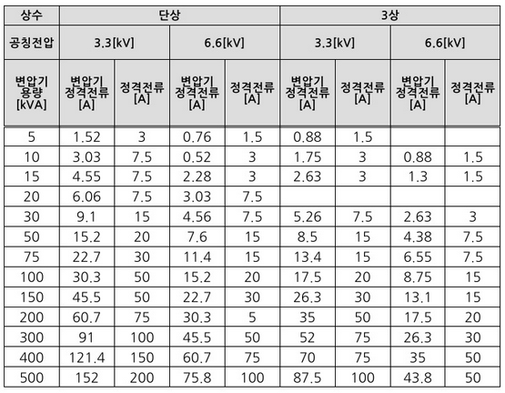
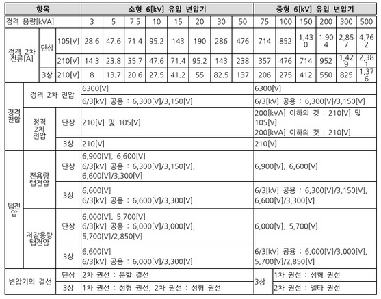
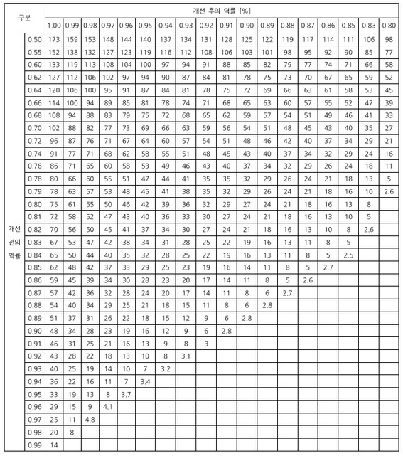

①
②
③
해설) 서술 암기형 / 난이도 중
| 점수 | 세부기준 |
|---|---|
| 5점 | 소문항 총 3개 모두 정답인 경우 5점 획득 |
| 3점 | 소문항 총 3개 중 2개가 정답인 경우 3점 획득 |
| 1점 | 소문항 총 3개 중 1개가 정답인 경우 1점 획득 |
[한국전기설비규정 341.13 피뢰기의 시설]
가. 고압 및 특고압의 전로 중 다음에 열거하는 곳 또는 이에 근접한 곳에는 피뢰기를 시설하여야 한다.
가공전선의 진동을 방지한다.
| 점수 | 세부기준 |
|---|---|
| 4점 | 정답이 맞으면 4점 획득 |
[가공전선의 진동 방지 대책]
댐퍼 (Damper): 바람이 불면 가공전선의 주변에 와류가 발생하여 상하로 진동이 발생하게 되는데, 이와 같은 진동을 억제하기 위해 댐퍼를 설치한다. 댐퍼의 종류로는 스톡브릿지 댐퍼, 토셔널 댐퍼, 아머로드 댐퍼 또는 베이츠 댐퍼가 있다.
아머로드 (Armor rod): 지지점 부근의 전선을 보강하기 위해 사용된다.
설계자가 크기, 형상 등 전체적인 조화를 생각하여 형광등 기구를 벽면 상방 모서리에 숨겨서 설치하는 방식으로, 기구로부터 빛이 직접 벽면을 조명하는 건축화 조명방식이다.
정답| 점수 | 세부기준 |
|---|---|
| 3점 | 정답이 맞으면 3점 획득 |


| 점수 | 세부기준 |
|---|---|
| 5점 | 완성 도면이 정답과 같은 경우에만 5점 획득, 오류가 있으면 0점 |
3로 스위치는 1개의 전등을 2개의 장소에 설치된 스위치를 통해 점등을 하고자 할 때 필요하다. 대표적인 예는 긴 복도 양쪽에 3로 스위치를 설치하여 한쪽의 스위치에서 전등을 켜고 복도를 지난 후 다른 쪽의 스위치에서 전등을 끌 수 있도록 설계된 스위치이다. 만약에 3개 이상의 장소에 설치된 스위치를 통해 1개의 전등을 점멸하고자 할 때 3로 스위치는 양 끝에 2개가 필요하고 나머지 장소에는 4로 스위치를 설치하면 된다.
[3로, 4로 스위치 필요 개수]
변류기의 비는 100/5 = 20 이다.
이론적으로 2차측에 흘러야 하는 전류는 다음과 같다.
\[ I_{2(theory)} = \frac{250[A]}{20} = 12.5[A] \]
실제 2차측 전류는 10[A] 이므로 비오차는 다음과 같이 계산된다.
\[ 비오차 = \frac{|12.5 - 10|}{12.5} \times 100\% = \frac{2.5}{12.5} \times 100\% = 20\% \]
정답 20%
해설) 단순 계산형 / 난이도 中
정답\[ 비오차 = \frac{\text{공칭 변류비} - \text{실제 변류비}}{\text{실제 변류비}} \times 100 [%] \]
\[ 비오차 = \frac{\frac{100}{5} - \frac{250}{10}}{\frac{250}{10}} \times 100 = -20 [%] \]
정답 -20 [%]
부분점수
| 점수 | 세부기준 |
|---|---|
| 4점 | 계산과정과 정답이 모두 맞으면 4점 획득, 오류가 있으면 0점 |
해설
비오차: 측정 시의 실제 변류비와 공칭 변류비 사이의 오차
\[ 비오차 = \frac{\text{공칭 변류비} - \text{실제 변류비}}{\text{실제 변류비}} \times 100 [%] \]

\[ i_p = I_p \times CT비 = \frac{P}{\sqrt{3}V_p cos\theta} \times CT비 = \frac{30 \times 10^6}{\sqrt{3} \times 33 \times 10^3 \times 1} \times \frac{5}{500} \approx 5.25 [A] \]
\[ i_s = \sqrt{3}I_s \times CT비 = \sqrt{3} \times \frac{P}{\sqrt{3}V_s cos\theta} \times CT비 = \sqrt{3} \times \frac{30 \times 10^6}{\sqrt{3} \times 11 \times 10^3 \times 1} \times \frac{5}{2000} \approx 6.82 [A] \]
계전기가 정격전류의 200[%]에서 동작하므로 전류의 정정값은
\[ i_r = (i_s - i_p) \times 2 = (6.82 - 5.25) \times 2 = 3.14 [A] \]
| 점수 | 세부기준 |
|---|---|
| 6점 | 계산과정과 정답이 모두 맞으면 6점 획득, 오류가 있으면 0점 |
비율차동계전기 2차 측 (Y-Δ) 전류 중 \(i_s\)는 Δ결선으로 상전류의 \(\sqrt{3}\)배를 한다.
[1단계] 1차 측 Δ → Y
\[ 변압기 1차 전류 I_p = \frac{P}{\sqrt{3}V_p cos\theta} = \frac{30 \times 10^6}{\sqrt{3} \times 33 \times 10^3 \times 1} \approx 524.86 [A] \]
\[ 계전기 전류 i_p = I_p \times 변류비 = 524.86 \times \frac{5}{500} \approx 5.25 [A] \]
[2단계] 2차 측 Y → Δ
\[ 변압기 2차 전류 I_s = \frac{P}{\sqrt{3}V_s cos\theta} = \frac{30 \times 10^6}{\sqrt{3} \times 11 \times 10^3 \times 1} \approx 1574.59 [A] \]
\[ 계전기 전류 i_s = I_s \times 변류비 \times \sqrt{3} = 1574.59 \times \frac{5}{2000} \times \sqrt{3} \approx 6.82 [A] \]
[3단계] 계전기 정정값은 정격전류 차이값의 200[%]에서 동작하므로
\[ \therefore i_r = (i_s - i_p) \times 2 = (6.82 - 5.25) \times 2 = 3.14 [A] \]
()
총 소선 수 N = 37 가닥이므로 중심선을 뺀 층수 n = 3이다.
연선의 외경 D = (2 \(\times\) 3 + 1) \(\times\) 3.2 = 22.4[mm]
정답 22.4[mm]
부분점수
| 점수 | 세부기준 |
|---|---|
| 5점 | 계산과정과 정답이 모두 맞으면 5점 획득, 오류가 있으면 0점 |
해설
소선의 가닥 수 N = 3n(n+1) + 1 (여기서, n은 중심선을 뺀 층수이다.)
예를 들면 n=2일 때, N=19, n=3일 때 N=37, n=4일 때 N=61이다.
연선의 외경 D = (2n+1)d (여기서 n:층수, d: 소선의 지름이다.)
연선의 외경을 구할 때 2n+1인 것은 중심 소선 양쪽에 n층이 있기 때문이다.
크기가 가로 8[m], 세로 10[m], 높이 4.8[m]이다.
작업면 높이는 0.8[m]이다.
\[ 실지수 \frac{8 \times 10}{(4.8 - 0.8) \times (8 + 10)} \approx 1.11 \]
정답 1.11
부분점수
| 점수 | 세부기준 |
|---|---|
| 4점 | 계산과정과 정답이 모두 맞으면 4점 획득, 오류가 있으면 0점 |
해설
\[ 실지수 (Room Index) RI = \frac{X \cdot Y}{H(X + Y)} \]
(여기서, H: 천장과 작업면까지 거리, X: 공간의 가로 길이, Y: 세로 길이)
변압기 4대로 V 결선 2뱅크(Bank) 출력
\[ P_m = 2P_v = 2 \times (\sqrt{3} \times P_1) = 2 \times (\sqrt{3} \times 500) \approx 1732.05 \text{ [kVA]} \]
정답 1,732.05 [kVA]
| 점수 | 세부기준 |
|---|---|
| 4점 | 계산과정과 정답이 모두 맞으면 4점 획득, 오류가 있으면 0점 |
[단상 변압기 2대로 V결선 시 3상 출력]
\[ P_v = \sqrt{3} P_1 (단상 변압기 1대 용량) \]
[변압기 4대로 V 결선 2뱅크(Bank) 출력]
\[ P_m = 2P_v = 2 \times (\sqrt{3}P_1) = 2\sqrt{3}P_1 \text{ [VA]} \]
\[ 방전전류: I_1 = 200[A], I_2 = 300[A], I_3 = 150[A], I_4 = 100[A] \] \[ 방전시간: T_1 = 130분, T_2 = 120분, T_3 = 40분, T_4 = 5분 \] \[ \* 용량 환산시간: K_1 = 2.45, K_2 = 2.45, K_3 = 1.46, K_4 = 0.45 \]

해설) 단순 계산형 / 난이도 下
정답\[ C = \frac{\{2.45 \times 200 + 2.45 \times (300 - 200) + 1.46 \times (150 - 300) + 0.45 \times (100 - 150)\}}{0.7} = 705 \text{ [Ah]} \]
정답 705 [Ah]
부분점수
| 점수 | 세부기준 |
|---|---|
| 6점 | 계산과정과 정답이 모두 맞으면 6점 획득, 오류가 있으면 0점 |
해설
[1단계] 방전 특성곡선의 면적 KI 계산
\[ KI = I_2 \times K_1 - \{(I_2 - I_1) \times (K_1 - K_2)\} - \{(I_2 - I_3) \times (K_3 - K_4)\} - \{(I_3 - I_4) \times (K_4)\} \]
\[ = K_1I_1 + K_2(I_2 - I_1) + K_3(I_3 - I_2) + K_4(I_4 - I_3) \]
[2단계] 축전지 용량 C: 방전 특성 곡선의 면적을 계산하여 보수율로 나눈다.
\[ C = \frac{1}{L}KI = \frac{1}{\text{보수율}} \times \text{용량 환산 시간} \times \text{방전 전류 [Ah]} \]
\[ C = \frac{1}{L}KI = \frac{K_1I_1 + K_2(I_2 - I_1) + K_3(I_3 - I_2) + K_4(I_4 - I_3)}{L} \text{ [Ah]} \]
S = $ $
\(S_m\) = 2.5S
| 점수 | 세부기준 |
|---|---|
| 6점 | 소문항 (1), (2) 총 2문제가 모두 정답인 경우 6점 획득 |
| 3점 | 소문항 (1), (2) 총 2문제 중 1개가 정답인 경우 3점 획득 |
[KSC 1701] 계기용 변성기(전력 수급용)
열적 단시간 전류 $S = $
(여기서, S: 통전시간 t초에서의 단시간 전류 강도, Sn: 정격 단시간 전류 강도, t: 통전시간[초])

\[ 지락전류 I_{g} = \frac{E}{R} = \frac{66000/\sqrt{3}}{300} \approx 127.02 \text{ [A]} \]
\[ 지락 계전기 전류 I_{DG} = 127.02 \times \frac{5}{300} \approx 2.12 \text{ [A]} \]
정답 2.12[A]
사고 시 A상에 흐르는 전류 $I_A = 지락전류 + 부하전류 = I_g + I_a $
\[ |I_A| = |127.02 + \frac{20000}{\sqrt{3} \times 66 \times 0.8} \times (0.8 - j0.6)| = |301.97 + j131.22| \approx 329.25 \text{ [A]} \]
전류계 Ⓐ에 흐르는 전류$ I_A = 329.25 $
정답 5.49[A]
사고 시 B상에 흐르는 전류 $I_B = I_b = = $
전류계 Ⓑ에 흐르는 전류$ I_B = 218.69 $
정답 3.64[A]
사고 시 C상에 흐르는 전류 $I_C = I_c = = $
전류계 Ⓒ에 흐르는 전류 \(I_C = 218.69 \times \frac{5}{300} \approx 3.64 \text{ [A]}\)
정답 3.64[A]
| 점수 | 세부기준 |
|---|---|
| 8점 | 소문항 (1)~(4) 총 4문항이 모두 계산과정과 정답이 맞으면 8점 획득 |
| 2점 | 소문항 총 4문항 중 계산과정과 정답이 맞은 1개당 2점씩 획득 |
a상 지락사고시 건전상 b, c에는 부하 전류만 흐르고 고장상 a에는 지락전류 \(I_g\)와 부하전류 \(I_a\)가 함께 흐른다. 즉, \(I_A = I_g + I_a\) 가 된다.
중성점 저항 접지방식이므로 지락전류는 유효분 전류가 된다.
| 구분 | 정상상태 | A상 사고 시 |
|---|---|---|
| A상 | \(I_a\) | $I_g + I_a $ |
| B상 | \(I_b\) | \(I_b\) |
| C상 | \(I_c\) | \(I_c\) |
| DG | \(I_a + I_b + I_c = 0\) | \(I_a + I_b + I_c = I_g\) |
지락전류 \(I_g\)는 선로의 커패시턴스 성분으로 인해 진상전류이나 문제에서 주어진 조건은 선로정수를 무시해도 되므로 동상전류인 것으로 간주하고 계산한다.
| 종별 | 직부형 | 펜던트형 | 매입 및 반매입형 |
|---|---|---|---|
| 10[W] 이하 × 1 | 0.123 | 0.150 | 0.182 |
| 20[W] 이하 × 1 | 0.141 | 0.168 | 0.214 |
| 20[W] 이하 × 2 | 0.177 | 0.215 | 0.273 |
| 20[W] 이하 × 3 | 0.223 | - | 0.335 |
| 20[W] 이하 × 4 | 0.323 | - | 0.489 |
| 30[W] 이하 × 1 | 0.150 | 0.177 | 0.227 |
| 30[W] 이하 × 2 | 0.189 | - | 0.310 |
| 40[W] 이하 × 1 | 0.223 | 0.268 | 0.340 |
| 40[W] 이하 × 2 | 0.277 | 0.332 | 0.415 |
| 40[W] 이하 × 3 | 0.359 | 0.432 | 0.545 |
| 40[W] 이하 × 4 | 0.468 | - | 0.710 |
| 110[W] 이하 × 1 | 0.414 | 0.495 | 0.627 |
| 110[W] 이하 × 2 | 0.505 | 0.601 | 0.764 |
()
해설) 복합 계산형 / 난이도 중
[1단계] 철거 공량
32[W] × 2 매입하면 개방형 형광등 30[등]: 0.415 \(\times\) 30 \(\times\) 0.3 = 3.735[인]
20[W] × 2 펜던트 개방형 형광등 20[등]: 0.215 \(\times\) 20 \(\times\) 0.3 = 2.15[인]
[2단계] 설치 공량
32[W] × 3 매입 루버형 형광등 30[등]: 0.545 \(\times\) 30 \(\times\) 1.1 = 17.985[인]
20[W] × 2 직부 하면 개방형 형광등 20[등]: 0.177 \(\times\) 20 = 3.54[인]
[3단계] 철거 및 설치 인공 총계: 3.735 + 2.15 + 17.985 + 3.54 = 27.41[인]
[4단계] 직접 노무비: 27.41 \(\times\) 225,408 = 6,178,433[원]
정답 6,178,433[원]
| 점수 | 세부 기준 |
|---|---|
| 5점 | 계산 과정과 정답이 모두 맞으면 5점 획득, 오류가 있으면 0점 |
주어진 조건과 표를 이용하여 전등의 철거 및 설치 공사에 소요되는 직접 노무비를 계산하는 능력을 확인하는 문제이다. 먼저 등의 종류별 철거 및 설치 공량을 계산하여 철거 및 설치 인공 총계를 계산한 후 내선 전공 노임을 곱하여 최종 직접 노무비를 계산하면 된다.

\[ 전력: P = W_1 + W_2 = 2.9 + 6 = 8.9 \, [kW] \] \[ 피상전력: P_a = \sqrt{3}VI = \sqrt{3} \times 200 \times 30 \approx 10.39 \, [kVA] \] \[ \* 역률: \cos\theta = \frac{8.9}{10.39} \times 100 \approx 85.66 \, [\%] \]
정답: 85.66 [%]
\[ Q = P(\tan\theta_1 - \tan\theta_2) = (2.9 + 6) \times \left( \sqrt{\frac{1 - 0.8566^2}{0.8566}} - \sqrt{\frac{1 - 0.9^2}{0.9}} \right) \approx 1.05 \, [kVA] \]
정답: 1.05 [kVA]
권상용 전동기의 용량: $P = , [kW] $
권상 하중: $W = , [ton] $
정답: 2.18 [ton]
부분점수
| 점수 | 세부기준 |
|---|---|
| 9점 | 소문항 (1)~(3) 총 3문항 모두 계산과정과 정답이 맞는 경우 9점 획득 |
| 3점 | 소문항 총 3문항 중 계산과정과 정답이 맞는 1문항당 3점씩 획득 |
해설
[2전력계법에서의 전력과 역률 계산]
\[ 유효전력: P = W_1 + W_2 \, [W] \] \[ 무효전력: Q = \sqrt{3}|W*1 - W_2| \, [Var] \] \[ * 피상전력: P*a = \frac{\sqrt{3}VI}{\sqrt{2\sqrt{W_1^2 + W_2^2 - W_1W_2}}} \, [VA] \] \[ * \cos\theta = \frac{P}{P_a} = \frac{W_1 + W_2}{\sqrt{2\sqrt{W_1^2 + W_2^2 - W_1W_2}}} 또는 \cos\theta = \frac{\text{유효 전력}}{\text{피상 전력}} = \frac{W_1 + W_2}{\sqrt{3}VI} \]
전압계, 전류계가 있는 경우 직접 피상전력을 계산하여 역률을 구하고, 전력계만 있는 경우 전력량 값에 의한 계산된 피상전력으로 역률을 구하면 된다.
역률 개선용 콘덴서의 용량: $Q = P(_1 - _2) $
권상기 소요 동력: $P = , [kW] $
(여기서, K: 여유 계수, W: 권상 하중 [ton], v: 권상 속도 [m/분], : 권상기 효율)

① 최대 과전류 LOCK 전류 [A]:
② 과전류 LOCK 기능의 의미:
① 피뢰기 정격전압 [kV]:
② 제1보호 대상:
①
②
MOF의 과전류 강도는 기기 설치점에서 단락전류에 의해 계산 적용하되, 22.9[kV] 급으로서 60[A] 이하의 MOF 최소 과전류 강도는 전기사업자 규격에 의한 (①) 배로 하고, 계산한 값이 75배 이상인 경우 (②) 배를 적용하며, 60[A] 초과 시 MOF의 과전류 강도는 (③) 배로 적용한다.
정답①
②
③
① 최대 과전류 LOCK 전류 값: 880[A]
② 기능의 의미: LOCK 전류 이상값으로 고장이 발생하면 ASS가 LOCK되어 차단되지 않고 후비보호장치인 리클로져나 주차단기의 차단에 의해 고장 전류가 제거된 후 무전압 상태에서 ASS 차단된다.
① 피뢰기 정격전압: 18[kV]
② 제1보호 대상: 전력용 변압기
① 재투입이 불가능하다.
② 차단 시 과전압이 발생된다.
75, 150, 40
[1단계] 3상 단락전류$ I_{3s}$
\[ I_{3s} = \frac{100}{\%Z_u} \times \frac{P}{\sqrt{3}V} = \frac{100}{5} \times \frac{500 \times 10^3}{\sqrt{3} \times 380} \approx 15,193.43[A] \]
[2단계] 선간(2상) 단락전류 \(I_{2s}\)
\[ I*{2s} = I*{3s} \times \frac{\sqrt{3}}{2} = 15,193.43 \times \frac{\sqrt{3}}{2} \approx 13,157.90[A] \]
정답 \(I*{3s} = 15,193.43[A], I*{2s} = 13,157.90[A]\)
부분점수
| 점수 | 세부기준 |
|---|---|
| 14점 | 소문항 (1)~(5) 모두 계산과정과 정답이 맞으면 14점 획득 |
| 9~0점 | 소문항 (1)~(4)의 총 9개의 답안 중 정답과 맞는 1개당 1점 획득 |
| 5점 | 소문항 (5)의 계산과정과 정답이 맞으면 5점 획득, 오류가 있으면 0점 |
해설
[ASS 정격표]
| 종류 | 기준 값 |
|---|---|
| 정격전압 | 25.8 [kV] |
| 정격전류 | 200 [A] |
| 정격주파수 | 60 [Hz] |
| 정격단기간전류(순시) | 15 [kA] |
| 정격투입전류 | 15 [kA] |
| 정격차단전류 | 900 [A] |
| 과전류 LOCK 전류 | 800 [A] (±10%) |
(여기서, 최대 LOCK 전류 값: 880[A]이다.)
[배전선로에서 리클로저(Recloser)와의 협조] (설명 생략)
[피뢰기의 정격전압] (설명 생략)
| 전력계통 전압 [kV] | 피뢰기 정격전압 [kV] |
|---|---|
| 345(유효 접지) | 288 |
| 154(유효 접지) | 144 |
| 66(PC접지 또는 비접지) | 72 |
| 22(PC접지 또는 비접지) | 24 |
| 220/2차 고저항 접지 | 21 |
[전력용 퓨즈(PF: Power Fuse)의 특징] (설명 생략)
| 장점 | 단점 |
|---|---|
|
소형 및 경량이다. 가격이 경제적이다. 릴레이와 변성기가 필요 없다. 차단시 무방출 무음(한류형 퓨즈)이다. 고속도 차단이 가능하다. 보수가 용이하다. 한류 효과가 우수하다. 소형이기 때문에 장치 전체가 소형이다. |
재투입을 할 수 없다. 과전류에서 용단될 수 있다. 동작시간-전류 특성을 계전기처럼 마음대로 조정하는 것이 불가능하다. 최소차단전류 영역이 있다. 비보호 영역이 있어 사용 중에 열화동작에 의해 결상 우려가 있다. 차단 순간 과전압이 발생(한류형)한다. 후비보호가 완벽하지 않다. |
[변압기 사고시 전류 계산식(발전기 기본식 응용)] (설명 생략)
| 사용 목적 | 용량 [kW] | 대수 | 상용동력 [kW] | 하계동력 [kW] | 동계동력 [kW] |
|---|---|---|---|---|---|
| 난방 관계 | |||||
| 보일러 펌프 | 6.0 | 1 | 6.0 | ||
| 오일 기어 펌프 | 0.4 | 1 | 0.4 | ||
| 온수 순환 펌프 | 3.0 | 1 | 3.0 | ||
| 공기 조화 관계 | |||||
| 1, 2, 3층 패키지 콤프레셔 | 7.5 | 6 | 45.0 | ||
| 콤프레셔 팬 | 5.5 | 3 | 16.5 | ||
| 냉각수 펌프 | 5.5 | 1 | 5.5 | ||
| 쿨링 타워 | 1.5 | 1 | 1.5 | ||
| 급수/배수 관계 | |||||
| 양수 펌프 | 3.0 | 1 | 3.0 | ||
| 기타 | |||||
| 소화 펌프 | 5.5 | 1 | 5.5 | ||
| 셔터 | 0.4 | 2 | 0.8 | ||
| 합계 | 25.8 | 52.0 | 9.4 |
| 사용 목적 | 와트 [W] | 수량 | 합계 [VA] | 총 용량 [VA] | 비고 |
|---|---|---|---|---|---|
| 전등 관계 | |||||
| 수은등 A | 200 | 4 | 260 | 1,040 | 200[V] 고역률 |
| 수은등 B | 100 | 8 | 140 | 1,120 | 200[V] 고역률 |
| 형광등 | 40 | 820 | 55 | 45,100 | 200[V] 고역률 |
| 백열전등 | 60 | 10 | 60 | 600 | |
| 콘센트 관계 | |||||
| 일반 콘센트 | 80 | 150 | 12,000 | 2P 15[A] | |
| 환기팬용 콘센트 | 8 | 55 | 440 | ||
| 히터용 콘센트 | 1,500 | 2 | 3,000 | ||
| 복사기용 콘센트 | 4 | 3,600 | |||
| 텔레타이프용 콘센트 | 2 | 2,400 | |||
| 룸 쿨러용 콘센트 | 6 | 7,200 | |||
| 기타 | |||||
| 전화 교환용 정류기 | 1 | 800 | 800 | ||
| 계 | 77,300 |


| 구분 | 계산과정 | 답 |
|---|---|---|
| 상용동력 | ||
| 하계동력 | ||
| 동계동력 |

정답 생략
계산과정 온수 순환 펌프는 상시 운전이므로 수용률 100[%]로 계산 \[ 수용부하 = 3.0 × 1 + (6.0 + 0.4) × 0.6 = 6.84 [kW] \]
정답 6.84 [kW]
| 구분 | 계산 과정 | 답 |
|---|---|---|
| 상용동력 | \(\frac{25.8}{0.8}\) = 32.25[kVA] | 32.25 [kVA] |
| 하계동력 | \(\frac{52.0}{0.8}\) = 65[kVA] | 65 [kVA] |
| 동계동력 | \(\frac{9.4}{0.8}\) = 11.75[kVA] | 11.75 [kVA] |
계산과정 총 전기설비의 용량 = 동력 부하 + 조명 및 콘센트 부하
총 부하 설비 = (32.25 + 65) + 77.3 = 174.55 [kVA]
정답 174.55 [kVA]
전등 부하: (1.04 + 1.12 + 45.1 + 0.6) × 0.7 = 33.502 [kVA]
콘센트 부하: (12.0 + 0.44 + 3.0 + 3.6 + 2.4 + 7.2) × 0.5 = 14.32 [kVA]
기타(정류기) 부하: 0.8 [kVA]
단상 변압기의 용량: 33.502 + 14.32 + 0.8 = 48.622 계산된 값보다 커야한다.
정답 50 [kVA] 선정
(2)번에서 기준 동력 부하(상용동력 + 하계동력과 동계동력 중 큰 값) = 97.25 [kVA]
동력설비의 수용 부하: 97.25 × 0.6 = 58.35 [kVA] 계산된 값보다 커야한다.
정답 75 [kVA] 선정
계산과정 변압기의 총 용량 = 단상 변압기의 용량 + 3상 변압기의 용량 \[ 50 + 75 = 125 [kVA] \]
정답 125 [kVA]
[참고자료1]의 표에서 (단상 6.6 [kV])과 (정격 전류 15[A])의 교차점 [참고자료1]의 표에서 (3상 6.6 [kV])과 (정격 전류 7.5[A])의 교차점
정답 ① 단상 변압기: 15 [A], ② 3상 변압기: 7.5 [A]
계산과정 [참고자료3]에서 (개선 전 역률 0.8)과 (개선 후 역률 0.95)의 교차점 \[ 콘덴서 용량 [kVA] = 부하 [kW] × k_g = 부하 [kVA] × 개선전역률 × k_g \] \[ = 75 × 0.8 × 0.42 = 25.2 [kVA] \]
정답 25.2 [kVA]
부분점수
| 점수 | 세부기준 |
|---|---|
| 12점 | 소문항 (1)~(8) 모두 계산과정과 정답이 맞은 경우 12점 획득 |
| 5~0점 | 소문항 (1), (3), (5), (6), (8) 총 5개 중 정답이 맞은 1개당 1점 획득 |
| 2~0점 | 소문항 (4)의 계산과정과 정답이 맞은 경우 2점 획득, 오류가 있으면 0점 |
| 2~0점 | 소문항 (7)의 답안 총 2개 중 정답이 맞은 1개당 1점 획득 |
| 3~0점 | 소문항 (2)의 답안 총 3개 중 계산과정과 정답이 맞은 1개당 1점 획득 |
해설
동력 부하 = 상용 부하 + (하계, 동계 중 큰 부하) = 상용 부하 + 하계 부하 (일반적)
총 부하설비 = 동력 부하 + 조명 및 콘센트 부하
단상 변압기의 용량 ≥ 전등부하 + 콘센트 부하 + 기타(정류기) 부하
3상 변압기의 용량 ≥ 동력설비의 수용률을 적용한 부하
역률 개선용 전력용 콘덴서의 용량 = 부하용량 [kW] × \(k_g\)(개선전/후의 비율)